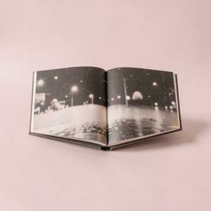
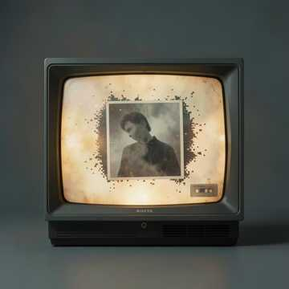
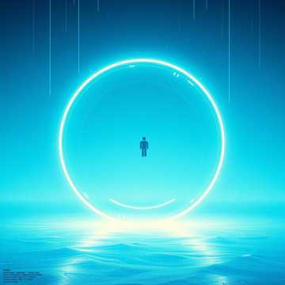
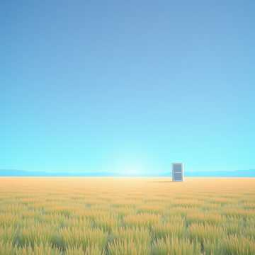
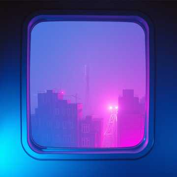
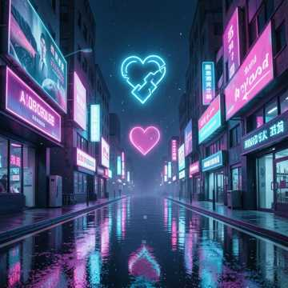
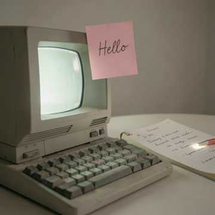
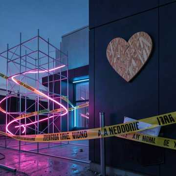
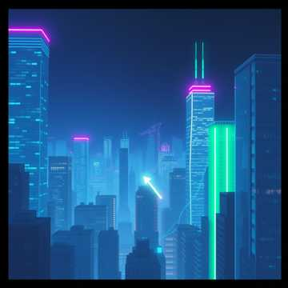

40kb Memory
jacobprestonharris
Lyrics
JPEG Compression (Genre: Bit-crushed Folk) (Verse) I remember your face in high definition But the file’s been saved in a bad condition Every time I think of you, a pixel falls away The edges get blurry, the colors turn gray (Chorus) Artifacts of us, noise in the grain I’m losing the detail, I’m losing the pain Just a 40kb memory of a summer night Compressed until the image doesn't look right

Bad Condition
boldlibrary4457
Lyrics
[Verse 1] I remember your face in high definition But the file’s been saved in a bad condition Every time I think of you, a pixel falls away The edges get blurry, the colors turn gray [Chorus] Artifacts of us, noise in the grain I’m losing the detail, I’m losing the pain Just a 40kb memory of a summer night Compressed until the image doesn't look right [Verse 2] I tried to zoom in on what we used to be But the picture keeps folding back on me Your laugh comes in jagged, your name comes out thin Like a cracked little chorus trapped in a tin [Chorus] Artifacts of us, noise in the grain I’m losing the detail, I’m losing the pain Just a 40kb memory of a summer night Compressed until the image doesn't look right [Bridge] And I know time don’t ask what it’s taking It just keeps on shaking what was once worth saving So I hold this broken frame in my hand Hoping one clear second could still stand [Chorus] Artifacts of us, noise in the grain I’m losing the detail, I’m losing the pain Just a 40kb memory of a summer night Compressed until the image doesn't look right

Buffer Stream Blue
boldlibrary4457
Lyrics
[Verse 1] Spinning circle in the center of my vision I’m stuck in a loop of a bad decision Waiting for the data to finally arrive But I’m at 2% just trying to survive [Pre-Chorus] Hold on, hold on Don’t let me fade The bars keep slipping The screen won’t save [Chorus] Buffer stream blue I’m lost in you Buffer stream blue I’m sinking through (through) Buffer stream blue Just me and you Buffer stream blue I’m breaking in two [Verse 2] Cursor blinks like a tiny warning light My thoughts spill out in a pixel fight I reach for the edge, it slips from view And everything turns buffer stream blue [Pre-Chorus] Wait for it... wait for it... I hear the freeze The sound cuts out And swallows me [Chorus] Buffer stream blue I’m lost in you Buffer stream blue I’m sinking through (through) Buffer stream blue Just me and you Buffer stream blue I’m breaking in two [Bridge] Wait for it... wait for it... The frame is frozen and the audio bit I’m seeing life through a low-res hue Drowning in the buffer stream blue [Final Chorus] Buffer stream blue I’m lost in you Buffer stream blue I’m sinking through (through) Buffer stream blue Just me and you Buffer stream blue I’m breaking in two
Cursor Trail
boldlibrary4457
Lyrics
[Verse 1] Everywhere I go The glitter follows me A ghost in the machine That I can’t quite see I’m moving the mouse In a jagged line Shadows of the pointer Are intertwined [Pre-Chorus] I turn, it turns A half-step late It never leaves It learns my shape [Chorus] Trailing, trailing A second behind Trailing, trailing The echo I can’t un-find I’m just a cursor In a vast white space Leaving fairy dust Across your interface (Trailing, trailing) [Verse 2] It hangs on my sleeve When I cross the room A silver blur In a quiet bloom I try to shake it But it stays in view One little afterimage Of everything I do [Pre-Chorus] I blink, it blinks It drifts, then stays A glowing trace Of my gone-away [Chorus] Trailing, trailing A second behind Trailing, trailing The echo I can’t un-find I’m just a cursor In a vast white space Leaving fairy dust Across your interface (Trailing, trailing) [Bridge] If I stop for a moment It gathers near A soft outlined answer In the static air Then I move again And it comes alive One small bright shadow Learning how I slide [Final Chorus] Trailing, trailing A second behind Trailing, trailing The echo I can’t un-find I’m just a cursor In a vast white space Leaving fairy dust Across your interface (Trailing, trailing)

Desktop Meadow
boldlibrary4457
Lyrics
[Verse 1] The grass is always green on the XP hill The clouds never move and the air is still I can sit here forever in the eight hundred by six hundred Where the sun never sets and the peace is abundant [Chorus] It’s a desktop meadow, a plastic sky No bugs in the grass, no tears in my eye Just a shortcut to a place that doesn’t exist In the perfect glow of the monitor mist (desktop meadow) (desktop meadow) [Verse 2] The icons sleep in rows like tiny signs I drag one dream and it redraws the lines Your face comes in soft, then fades to blue I keep this little field just for me and you [Chorus] It’s a desktop meadow, a plastic sky No bugs in the grass, no tears in my eye Just a shortcut to a place that doesn’t exist In the perfect glow of the monitor mist (desktop meadow) (desktop meadow) [Bridge] If the real world calls, let it ring I’m tucked inside this framed-up spring One more click and I disappear Into the calm that keeps me here [Chorus] It’s a desktop meadow, a plastic sky No bugs in the grass, no tears in my eye Just a shortcut to a place that doesn’t exist In the perfect glow of the monitor mist (desktop meadow) (desktop meadow)

Dial-Up Lullaby
boldlibrary4457
Lyrics
[Intro] [sfx: 56k modem connecting] Screeching in the dark [Chorus] Screeching through the wire, honey, close your eyes The static is the sound of our digital skies Three minutes of noise just to hear you breathe In the world of the wires, we never have to leave Go to sleep to the hum of the tower We’re online now, this is our hour [Verse 1] Your breath on my screen Slow and unseen A pulse in the rain A soft little name [Pre-Chorus] Hold on to the glow Let the cold miles go I can feel you near In the buzz I hear [Chorus] Screeching through the wire, honey, close your eyes The static is the sound of our digital skies Three minutes of noise just to hear you breathe In the world of the wires, we never have to leave Go to sleep to the hum of the tower We’re online now, this is our hour [Verse 2] Blue in the glass We watch it pass Tiny sparks fade In the seam we made [Bridge] If the line goes thin I’ll call you back in I’ll wait through the snow Till your whole heart loads [Chorus] Screeching through the wire, honey, close your eyes The static is the sound of our digital skies Three minutes of noise just to hear you breathe In the world of the wires, we never have to leave Go to sleep to the hum of the tower We’re online now, this is our hour

Heart Not Found
boldlibrary4457
Lyrics
[Verse 1] I traced your name In the cache of my mind Every folder you touched Went cold, went blind Your last reply Still hangs in the air A half-loaded smile That disappears there [Pre-Chorus] I hit refresh But nothing comes through I keep reaching out To a ghost of you Screen goes white Then it snaps to black One more try And you still don’t come back [Chorus] Searching for a trace in the cache of your soul But the directory is empty and I’m losing control I hit refresh But the screen stays white You’re a broken link In the middle of the night Error four oh four I can’t find the way You deleted the files And you’ve gone away Error four oh four I’m stuck on repeat Your missing heart Is still haunting me [Verse 2] I scroll through days Like a dead-end feed Every saved little moment Still won’t set me free The icon spins Like it knows my name Then the whole thing crashes And it starts again [Pre-Chorus] I hit refresh But nothing comes through I keep reaching out To a ghost of you Screen goes white Then it snaps to black One more try And you still don’t come back [Chorus] Searching for a trace in the cache of your soul But the directory is empty and I’m losing control I hit refresh But the screen stays white You’re a broken link In the middle of the night Error four oh four I can’t find the way You deleted the files And you’ve gone away Error four oh four I’m stuck on repeat Your missing heart Is still haunting me [Bridge] Maybe you logged off Maybe I pressed too hard Maybe I loved you Like a password scar Now every signal Turns into dust And all that’s left Is the glitch between us [Final Chorus] Searching for a trace in the cache of your soul But the directory is empty and I’m losing control I hit refresh But the screen stays white You’re a broken link In the middle of the night Error four oh four I can’t find the way You deleted the files And you’ve gone away Error four oh four I’m stuck on repeat Your missing heart Is still haunting me Error four oh four (heart not found) Error four oh four (heart not found)

Pink Guestbook
boldlibrary4457
Lyrics
[Verse 1] Scroll down past the sparkly Welcome sign To the place where you left a little piece of mind Cool site, add me back, written in pink Gone in a moment, faster than a blink [Pre-Chorus] Now the page just sits there Like it’s waiting on a name Old hearts in the margins Still spelling out your fame [Chorus] It’s guestbook graffiti On a dead-end page A time-capsule heart From a different age Just a timestamp And a how you been? Lost in the code Of what could have been (guestbook graffiti) [Verse 2] I found my old note Under a layer of dust A smiley face crooked And a little too much trust Your hello looked tiny But it stayed in place Like a fingerprint fading Off a screen I couldn’t erase [Pre-Chorus] Now the cursor’s blinking Where your words used to land I keep hearing your goodbye In the click of an old hand [Chorus] It’s guestbook graffiti On a dead-end page A time-capsule heart From a different age Just a timestamp And a how you been? Lost in the code Of what could have been (guestbook graffiti) [Bridge] If I typed it again Would it sound the same? Would you scroll right past Or remember my name? I keep that old pink message Like a match in my coat Burning in the corner Of a half-saved quote [Chorus] It’s guestbook graffiti On a dead-end page A time-capsule heart From a different age Just a timestamp And a how you been? Lost in the code Of what could have been (guestbook graffiti)

Under Construction Forever
boldlibrary4457
Lyrics
[Verse 1] Caution tape on the door Boots by the paint can I keep the hammer warm For a house with no plan The rooms are all outlines The windows are code I drew my name in the dust Then I watched it unload [Chorus] Caution tape spinning on a GIF loop track I’m building something up and I’m not looking back But the walls are just wireframes, the floor is just air If you look inside, there’s nobody there I’m under construction, come back soon I’ll be finished by the end of the afternoon (Never) I’m under construction, come back soon (I’m under construction) [Verse 2] Plywood heart, fresh scars Primer on my face I said “tomorrow” too loud And it echoed through the place The sign keeps swinging hard In the cold front wind Every nail I set in place Falls out once again [Pre-Chorus] Wait at the curb Don’t step through the gate I’m close enough to touch But too late, too late [Chorus] Caution tape spinning on a GIF loop track I’m building something up and I’m not looking back But the walls are just wireframes, the floor is just air If you look inside, there’s nobody there I’m under construction, come back soon I’ll be finished by the end of the afternoon (Never) I’m under construction, come back soon (I’m under construction) [Bridge] I keep the blueprint folded In my back pocket tight Every promise I made Got nailed to the night If you hear the drills fade out That’s just me again Starting from the spark And calling it the end [Final Chorus] Caution tape spinning on a GIF loop track I’m building something up and I’m not looking back But the walls are just wireframes, the floor is just air If you look inside, there’s nobody there I’m under construction, come back soon I’ll be finished by the end of the afternoon (Never) I’m under construction, come back soon (I’m under construction)

Winamp Visualiser
boldlibrary4457
Lyrics
[Verse 1] Searching for a trace in the cache of your soul But the directory is empty and I’m losing control I hit refresh but the screen stays white You’re a broken link in the middle of the night [Pre-Chorus] Spinning circle in the center of my vision I’m stuck in a loop of a bad decision Waiting for the data to finally arrive But I’m at 2% just trying to survive [Chorus] Error 404, I can’t find the way Error 404, you deleted the day I’m lost in the static, I’m lost in the blue Error 404, I keep calling for you [Verse 2] Wait for it... wait for it... The frame is frozen and the audio bit I’m seeing life through a low-res hue Drowning in the buffer stream blue [Pre-Chorus] Neon bars jumping to the kick of the drum I’m vibrating high until my fingers go numb [Chorus] Error 404, I can’t find the way Error 404, you deleted the day I’m lost in the static, I’m lost in the blue Error 404, I keep calling for you [Bridge] Watch the colors bleed, watch the pixels dance I’m losing my mind in a digital trance Green to the left, violet to the right I’m a Winamp ghost in the neon light [Chorus] Error 404, I can’t find the way Error 404, you deleted the day I’m lost in the static, I’m lost in the blue Error 404, I keep calling for you [Lakuntok? no]